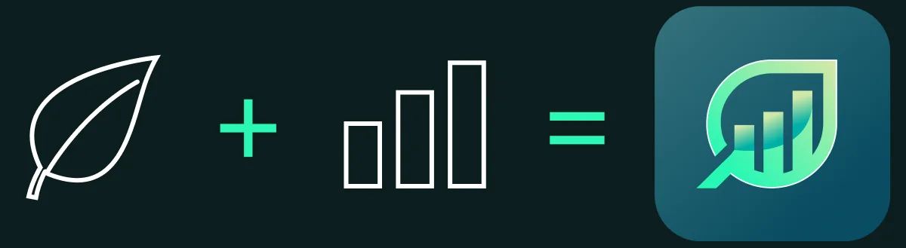
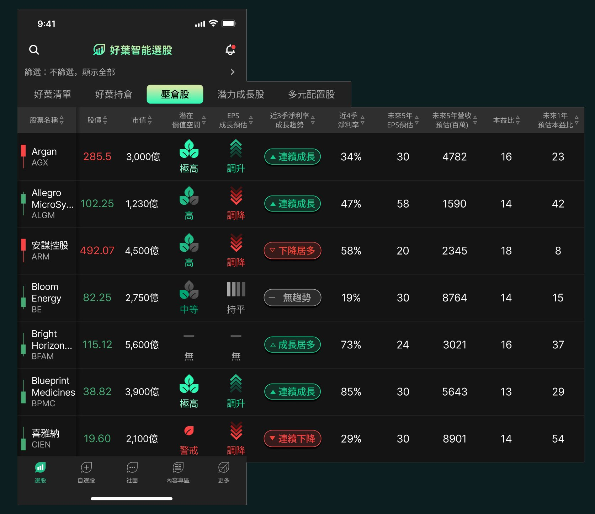
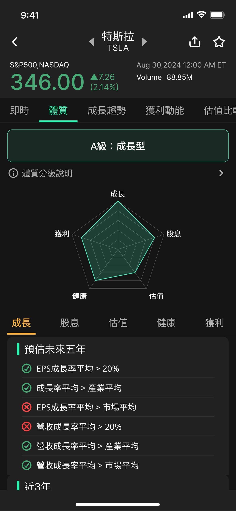
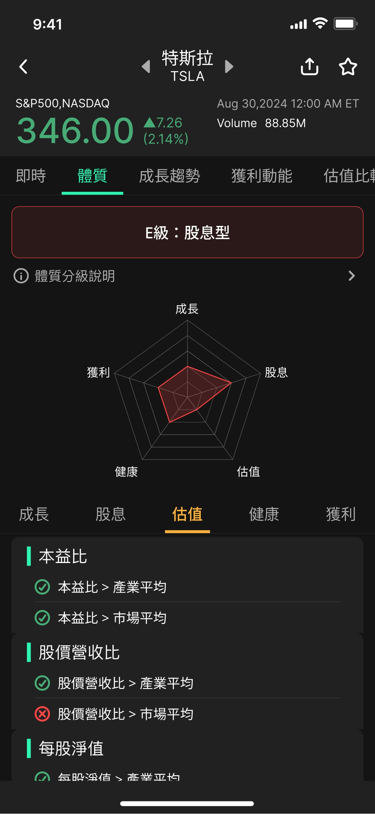
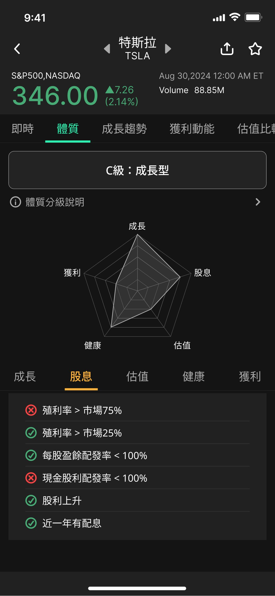
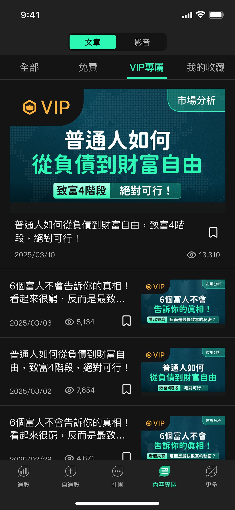

What I made我的設計
以「樹葉」結合象徵投資成長的上升箭頭，打造兼具品牌名稱意象與金融屬性的識別標誌。透過簡潔俐落的幾何造型，呼應品牌作為投資指引的定位，傳遞引領投資人掌握市場方向的核心概念。整體以深藍與科技綠為主色，搭配金融數據元素，塑造專業、理性且值得信賴的品牌形象。

Overview
「好葉智能選股」是一個以投資分析與選股資訊為核心的品牌，期望建立具備專業感、信賴感與辨識度的視覺形象。
本次專案業主並未設定明確的設計方向，而是給予高度創作自由，從品牌意象、視覺概念到風格定位皆由設計端自主發想，打造符合金融投資領域特性的品牌識別。
以「樹葉」結合象徵投資成長的上升箭頭，打造兼具品牌名稱意象與金融屬性的識別標誌。透過簡潔俐落的幾何造型，呼應品牌作為投資指引的定位，傳遞引領投資人掌握市場方向的核心概念。整體以深藍與科技綠為主色，搭配金融數據元素，塑造專業、理性且值得信賴的品牌形象。
品牌主視覺定案後，進一步延伸應用至各類數位行銷素材與活動視覺，並透過網路平台持續曝光。以一致的視覺語言串聯不同宣傳內容，讓品牌識別不僅停留於單一標誌，更成為後續行銷溝通與視覺延伸的基礎。
Proposal
業主給予高度創作自由，從品牌意象到風格定位提出三款方向，最終由 A 款定案。


Logo concept

葉片內部融入股市 K 線元素，呈現正成長的姿態，象徵股價上升、投資增值與穩健發展，傳達智慧投資帶來財富增長的意涵；也讓 Logo 在視覺上更直觀地與金融領域建立聯繫。
Brand system
App store
7 張商店圖以好葉本人為主角，一張講一個功能。
Onboarding
Inside the app

Feature 01



Feature 02

Feature 03